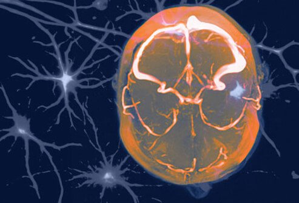

WHAT IS A MIGRAINE?
A migraine is a throbbing painful headache, usually on one side of the head, that is often initiated or "triggered" by specific compounds or situations (environment, stress, hormones, and many others). They occur more often in women (75%, approximately) and may affect a person’s ability to do common tasks.
MIGRAINE SYMPTOMS
Migraine symptoms, throbbing pain, usually on one side of a person's head, can be intense enough to cause a person to be unable to do simple tasks or to work. The headache pain may radiate toward the eyes, forehead, or temple and make a person develop nausea, vomiting, vision problems, and sensitivity to normal light or mild exertion.
MIGRAINE WARNING SIGNS
"Classic" auras do not occur in all patients, but about 25% of migraine patients can have a prodromal phase. The prodromal phase occurs as long as 24 hours before migraine pain develops; the prodromal phase consists of mood changes (depressed, excited, irritable) and sensations of odd smells or tastes, while others may feel tired or tense.
WHAT CAUSES A MIGRAINE?
The neurological causes of migraines are not understood but researchers speculate something may initiate a mix of blood vessel permeation and brain chemicals to interact with brain cells to cause the migraine.
TRIGGER: ANXIETY AND STRESS
As mentioned, stress is sometimes a trigger for migraines. While it is unlikely that people can live stress-free lives, many people can reduce their stress and avoid triggering migraines by using relaxation techniques, deep breathing, and other biofeedback techniques.
TRIGGER: LACK OF FOOD OR SLEEP

Regular daily patterns of meals and sleep work well for some individuals to avoid migraines. Sleep interruptions and lack of adequate fluid and/or food intake and even some food binges may trigger a migraine.
TRIGGER: HORMONAL CHANGES
Many women's migraines are linked to their menstrual cycle. The hormonal increases and decreases are thought to be responsible for triggering migraines in some women. However, patterns differ from person to person so one type of hormonal therapy may benefit one woman, but it may be unhelpful or even increase migraine symptoms in other women.
CAFFEINE: HELP OR HINDRANCE?
The caffeine in coffee may help relieve migraines when used with some medications. However, when the caffeine levels drop, the patient may then be prone to develop headaches. Consequently, it may be both a help and a hindrance for people with migraines.
WHO GETS MIGRAINES?
Migraines occur in women about three times more often than in men; people with relatives who get migraines are more likely to get them. In addition, migraines more often occur in people with epilepsy, depression, stroke, asthma, anxiety, and in individuals with neurologic and hereditary (genetic) disorders.
DIAGNOSING MIGRAINES
Migraines are usually diagnosed by the clinical history of symptoms; however, most doctors will do a CT or MRI brain scan to determine if other causes of headaches (brain tumor or bleeding into the brain, for example) are present.
TREATMENT: PREVENTIVE MEDICINES
If your migraines are frequent and severe, your doctor may prescribe medication(s) to lessen the frequency or to prevent the headaches. Medicines that are used in this manner include Timolol (Blocadren), divalproex sodium (Depakote), propranolol (Inderal), and topiramate (Topamax), although the drugs were designed to reduce hypertension or prevent seizures.
TREATMENT: OVER-THE-COUNTER DRUGS
There are many types of over-the-counter (OTC) medicines for headache pain. Some of the most common are aspirin, naproxen sodium, ibuprofen, and acetaminophen; some OTCs are marketed as treatments for migraines. Although all of these OTCs may be helpful, people should not overuse them to avoid toxicity, ulcers, and other gastrointestinal problems. In addition, overuse may make migraines worse.